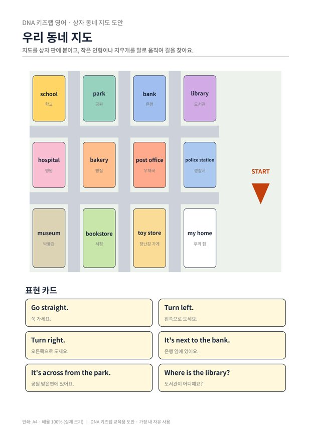

전체 단원 › 실험·활동 › 5학년 2학기 영어
상자 동네 지도

택배 상자 위에 우리 동네를 펼치고, 작은 인형을 영어로 길 안내해 목적지까지 데려가요.
30분 · 난이도 ★★☆ 보통
준비물
- 택배 상자 뚜껑 — 지도판으로 써요
- 동네 지도 도안 — 지도와 표현 카드 6장 (A4 1장)
- 작은 인형이나 지우개 — 지도 위를 걸어 다닐 말이에요
- 작은 상자들 (선택) — 약 상자로 건물을 세우면 입체 지도가 돼요
하는 방법
- 지도 붙이기
지도를 상자 뚜껑에 붙여요. 작은 상자로 건물을 세우면 더 실감 나요. - 출발점에 서기
인형을 START에 세우고, 한 사람이 "Where is the library?" 하고 물어요. - 말로만 안내하기
다른 사람은 표현 카드를 보며 "Go straight. Turn left." 하고 말로만 안내해요. 묻는 사람은 들은 대로만 인형을 움직여요. - 도착 확인하기
"It's next to the bank."처럼 위치를 설명하고, 맞게 도착했는지 확인한 뒤 역할을 바꿔요.
5~6학년 영어에서는 위치를 묻고 길을 안내하는 표현을 배웁니다. 말로만 안내하는 규칙이 핵심이에요. 손가락으로 가리키지 않고 영어로만 설명해야 하니, 자연스럽게 문장을 끝까지 말하게 됩니다.
학교 교육과정 연결
- [6영02-05] 주변 장소나 위치, 행동 순서나 방법을 간단한 문장으로 설명한다.
- [6영02-07] 일상생활 주제에 관한 담화나 글의 세부 정보를 간단한 문장으로 묻거나 답한다.